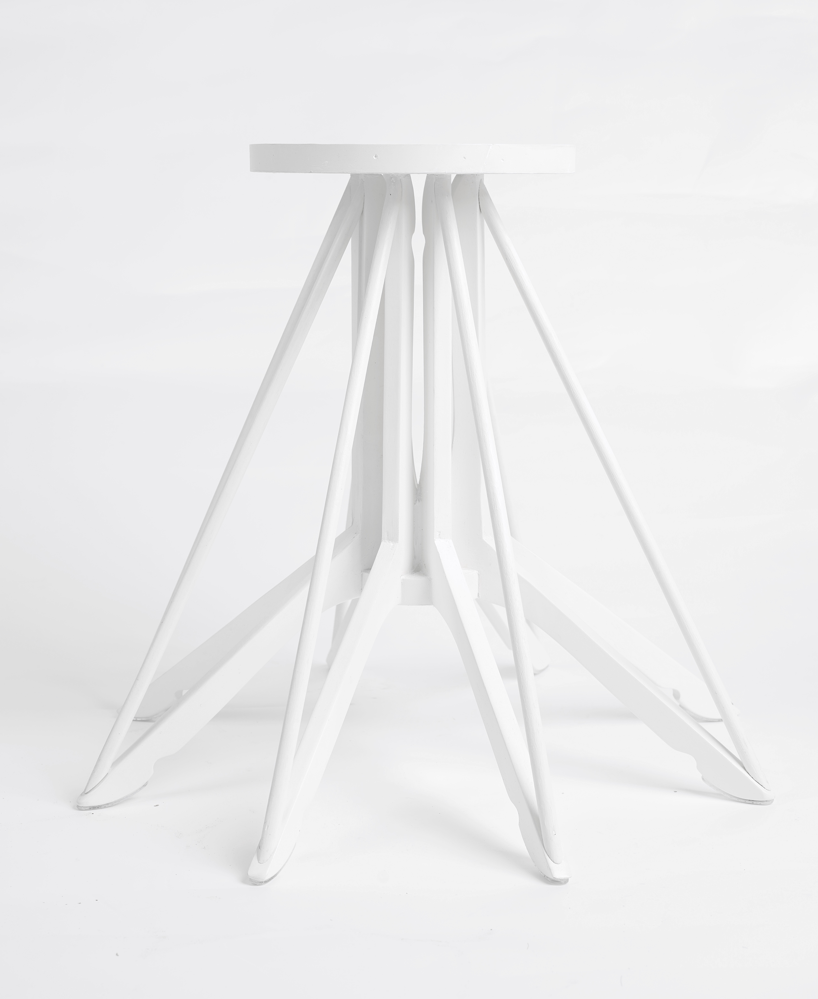
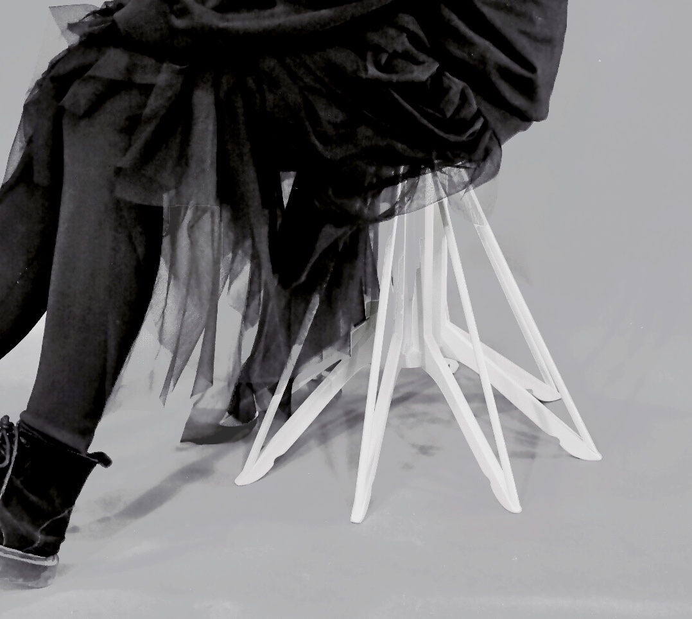

DANCING STOOL


舞凳以创造性的黑客视角，基于衣架与坐具的微妙关联，挑战平常事物美的重塑与生命的延续。我想利用其形态的张力，进行人与人造物的关系再定义，从而构建一种怪诞而合理、美丽而叛逆的“舞台”概念。
Based on the subtle relationship between hangers and seat, Dance Stool challenges the remodeling of the beauty of common things and the continuation of their lives. The tension of its form redefined the relationship between man and creations, and created a beautiful but rebellious concept of ‘stage’ .